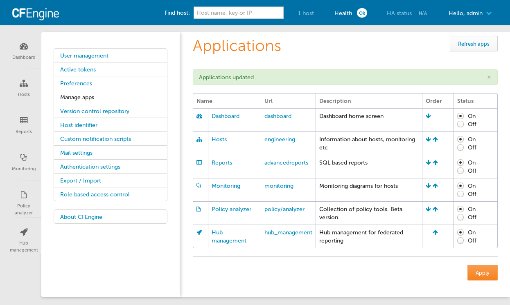
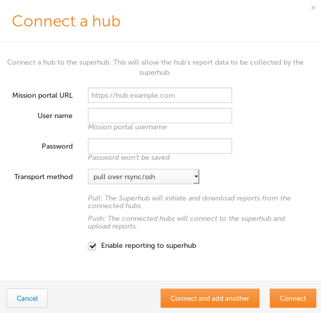
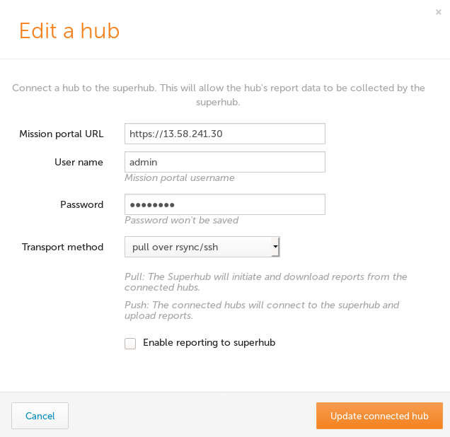

Federated Reporting
Overview
Federated Reporting enables the collection of data from multiple Hubs to provide a view in Mission Portal which can scale up beyond the capabilities of a Hub which manages hosts. CFEngine supports a large number of hosts per hub, around 5,000 hosts per hub depending on many factors. With Federated Reporting it is possible to scale up to 100,000 hosts or more for the purposes of analysis and reporting.
Hubs which hosts report to are called Feeder Hubs.
The hub which collects information from Feeder Hubs is called the Superhub.
If all hubs are version 3.14.0 or higher then Mission Portal can be used to configure and connect the Superhub and Feeder hubs. For Feeder hubs with an earlier version than 3.14.0 an API and manual steps must be followed. This documentation will be provided soon.
Installation
The General Installation instructions should be used to install CFEngine Hub on a Superhub as well as Feeder hubs.
Setup
Enable Hub management app

On the Superhub and all Feeder enable the Hub management
app by Opening Settings then
selecting Manage Apps and finally
by clicking the On radio button for Hub management in the Status column.
Enable Federated Reporting

The Hub management app should now appear in the bottom left corner of mission portal.
Click on the Enable Superhub or Enable Feeder button as appropriate. This will cause some configuration to be written in the filesystem and on next agent run policy will make the needed changes. You can speed up this process by running the agent manually.
Connect Feeder Hubs

Refresh the Hub management on each hub to see that Federated Reporting is enabled.
After all hubs have Federated Reporting enabled visit Hub management on the Superhub to connect the Feeder hubs.
Click on the Connect hub button to show the Connect a hub dialog.

Fill out the form with the base URL of your feeder hub Mission Portal and enter credentials for a user with administrative credentials. These credentials will only be used to authenticate to the feeder hub and will not be saved otherwise.
The Hub management view will show all connected hubs, the number of bootstrapped hosts and allow you to edit the settings.

Operation
Now that everything is configured the Feeder hubs will generate a database dump every 20 minutes and the Superhub will pull any available dumps from each Feeder every 20 minutes as well.
You can test import immediately by running the agent on the feeders and then the superhub.
Troubleshooting
Please refer to /var/cfengine/output, /var/log/postgresql.log and
/opt/cfengine/federation/superhub/import/*.log.gz when problems occur. Sending
these logs to us in bug reports will help significantly as we fine tune the
Federated Reporting feature.
Also see Disable Feeder for information about how to temporarily disable a feeder's participation in Federated Reporting in case that is causing an issue for the Feeder Hub.
API Setup
An API may be used instead of the UI. This could be used to automate the setup of infrastructure related to Federated Reporting and Feeder hubs.
Command line examples follow using curl and cf-remote.
Some environment variables should be set according to your environment so that you can simply copy/paste steps as you go.
$ export CLOUD_USER="ubuntu@" # optional, just to save cf-remote from guessing/trying
$ export SUPERHUB=18.203.231.97
$ export SUPERHUB_BS=172.31.36.33 # _BS is bootstrap IP in case it needs to be different
$ export FEEDER=34.244.118.58
$ export FEEDER_BS=172.31.43.102 # _BS is bootstrap IP
Stop cf-execd on the superhub and feeder
We don't want periodic agent runs to get in our ways so let's disable cf-execd.
$ cf-remote -H $CLOUD_USER$SUPERHUB,$CLOUD_USER$FEEDER sudo "systemctl stop cf-execd"
On systems not using systemd, cf-execd needs to be stopped in a different way. Also without systemd, any agent run restarts cf-execd so let's move it out of our ways.
$ cf-remote -H $CLOUD_USER$SUPERHUB,$CLOUD_USER$FEEDER sudo "pkill cf-execd"
$ cf-remote -H $CLOUD_USER$SUPERHUB,$CLOUD_USER$FEEDER sudo "mv /var/cfengine/bin/cf-execd /var/cfengine/bin/cf-execd.disabled"
Update masterfiles (hubs older than 3.14.0)
For hubs older than 3.14.0 the masterfiles must be updated to 3.14.0.
Follow instructions at Masterfiles Policy Framework upgrade.
Passwords
Export the password for the user with administrative rights that will make the
API requests. In these examples the admin user is used. Any user with
administrative rights can make these requests. It is also possible to customize
the RBAC settings to make a user who only has rights to the needed api/fr
APIs.
$ export PASSWORD="testingFR"
Enable superhub
$ curl -k -i -s -X POST -u admin:$PASSWORD https://$SUPERHUB/api/fr/setup-hub/superhub
Enable feeder
$ curl -k -i -s -X POST -u admin:$PASSWORD https://$FEEDER/api/fr/setup-hub/feeder
Enable feeder, without API
For older hubs:
$ ssh $CLOUDUSER$FEEDER
$ sudo bash
$ cd /opt/cfengine/federation/cfapache
$ cat > federation-config.json
{
"hostname": null,
"role": "feeder",
"remote_hubs": []
}
$
Trigger agent run
$ cf-remote -H $CLOUD_USER$SUPERHUB,$CLOUD_USER$FEEDER sudo "/var/cfengine/bin/cf-agent -KI"
Ensure there are no errors in the agent run.
Note down SSH and hostkey details
$ cf-remote -H $CLOUD_USER$SUPERHUB,$CLOUD_USER$FEEDER sudo "cat /opt/cfengine/federation/cfapache/setup-status.json"
ubuntu@52.215.88.224: 'cat /opt/cfengine/federation/cfapache/setup-status.json' -> '{'
ubuntu@52.215.88.224: ' "configured": true,'
ubuntu@52.215.88.224: ' "role": "superhub",'
ubuntu@52.215.88.224: ' "hostkey": "SHA=5628db8a4c5e6ba4f040ee1cafb3928abd966ebccb38b0045f91af67e91f9a16",'
ubuntu@52.215.88.224: ' "transport_ssh_public_key": "ssh-ed25519 AAAAC3NzaC1lZDI1NTE5AAAAIHqMau6qL+iCzr6o1+k+1IwoI6Wj++dzEV/w5VGMKy9w root@ip-172-31-22-191",'
ubuntu@52.215.88.224: ' "transport_ssh_server_fingerprint": "|1|d7iPkk7pb7tyZ3Y8lpQv6PIGU54=|VutDe9dq5S9nxgFher0LAapKSas= ecdsa-sha2-nistp256 AAAAE2VjZHNhLXNoYTItbmlzdHAyNTYAAAAIbmlzdHAyNTYAAABBBIW7FD4nfpJThtjtPj5okXsiCEenZOKDZh2akX2pBFlMpwOExVqvZV/all/fSlbVzlZbuHNA99SQ7m9Scsn2o/c="'
ubuntu@52.215.88.224: '}'
ubuntu@34.241.127.1: 'cat /opt/cfengine/federation/cfapache/setup-status.json' -> '{'
ubuntu@34.241.127.1: ' "configured": true,'
ubuntu@34.241.127.1: ' "role": "feeder",'
ubuntu@34.241.127.1: ' "hostkey": "SHA=8451d14a876bf480da2cf30b3293954722792f721b69541f919bb263326fbc45",'
ubuntu@34.241.127.1: ' "transport_ssh_public_key": "ssh-ed25519 AAAAC3NzaC1lZDI1NTE5AAAAIKnYDCbGfSIX/SOj+ZCeca1fX9HF1BdTjUHDyWPFG9Yh root@ip-172-31-27-84",'
ubuntu@34.241.127.1: ' "transport_ssh_server_fingerprint": "|1|UDqYbxUuV0BxrnpVMCZIjc7AIeg=|+TMJ8Cj3o4u8xy3mRSxfoTOdC7Q= ecdsa-sha2-nistp256 AAAAE2VjZHNhLXNoYTItbmlzdHAyNTYAAAAIbmlzdHAyNTYAAABBBHqMOtNqVfryEpLK5rhib62hxSTe4DvTGEBy/Bhmb3tqlhhlRgsR1g0tDtNDkJZ12mnuAMntb8WV0j7SGm9+RYo="'
ubuntu@34.241.127.1: '}'
$ export SUPERHUB_HOSTKEY="SHA=5628db8a4c5e6ba4f040ee1cafb3928abd966ebccb38b0045f91af67e91f9a16"
$ export SUPERHUB_PUB="ssh-ed25519 AAAAC3NzaC1lZDI1NTE5AAAAIHqMau6qL+iCzr6o1+k+1IwoI6Wj++dzEV/w5VGMKy9w root@ip-172-31-22-191"
$ export SUPERHUB_FP="|1|d7iPkk7pb7tyZ3Y8lpQv6PIGU54=|VutDe9dq5S9nxgFher0LAapKSas= ecdsa-sha2-nistp256 AAAAE2VjZHNhLXNoYTItbmlzdHAyNTYAAAAIbmlzdHAyNTYAAABBBIW7FD4nfpJThtjtPj5okXsiCEenZOKDZh2akX2pBFlMpwOExVqvZV/all/fSlbVzlZbuHNA99SQ7m9Scsn2o/c="
$ export FEEDER_HOSTKEY="SHA=8451d14a876bf480da2cf30b3293954722792f721b69541f919bb263326fbc45"
$ export FEEDER_PUB="ssh-ed25519 AAAAC3NzaC1lZDI1NTE5AAAAIKnYDCbGfSIX/SOj+ZCeca1fX9HF1BdTjUHDyWPFG9Yh root@ip-172-31-27-84"
$ export FEEDER_FP="|1|UDqYbxUuV0BxrnpVMCZIjc7AIeg=|+TMJ8Cj3o4u8xy3mRSxfoTOdC7Q= ecdsa-sha2-nistp256 AAAAE2VjZHNhLXNoYTItbmlzdHAyNTYAAAAIbmlzdHAyNTYAAABBBHqMOtNqVfryEpLK5rhib62hxSTe4DvTGEBy/Bhmb3tqlhhlRgsR1g0tDtNDkJZ12mnuAMntb8WV0j7SGm9+RYo="
Adding superhub to feeder
Construct a JSON for POST API
$ printf '{
"ui_name": "superhub",
"role": "superhub",
"hostkey": "%s",
"enabled": "true",
"target_state": "on",
"transport":
{
"mode": "pull_over_rsync",
"ssh_user": "cftransport",
"ssh_host": "%s",
"ssh_pubkey": "%s",
"ssh_fingerprint": "%s"
}
}
' "$SUPERHUB_HOSTKEY" "$SUPERHUB" "$SUPERHUB_PUB" "$SUPERHUB_FP" > superhub.json
$ cat superhub.json
{
"ui_name": "superhub",
"role": "superhub",
"hostkey": "SHA=5628db8a4c5e6ba4f040ee1cafb3928abd966ebccb38b0045f91af67e91f9a16",
"enabled": "true",
"target_state": "on",
"transport":
{
"mode": "pull_over_rsync",
"ssh_user": "cftransport",
"ssh_host": "52.215.88.224",
"ssh_pubkey": "ssh-ed25519 AAAAC3NzaC1lZDI1NTE5AAAAIHqMau6qL+iCzr6o1+k+1IwoI6Wj++dzEV/w5VGMKy9w root@ip-172-31-22-191",
"ssh_fingerprint": "|1|d7iPkk7pb7tyZ3Y8lpQv6PIGU54=|VutDe9dq5S9nxgFher0LAapKSas= ecdsa-sha2-nistp256 AAAAE2VjZHNhLXNoYTItbmlzdHAyNTYAAAAIbmlzdHAyNTYAAABBBIW7FD4nfpJThtjtPj5okXsiCEenZOKDZh2akX2pBFlMpwOExVqvZV/all/fSlbVzlZbuHNA99SQ7m9Scsn2o/c="
}
}
Look at the cat output, ensure ssh_host, ssh_pubkey, and ssh_fingerprint
are correct.
Use POST API to add superhub to feeder
$ curl -k -i -s -X POST -u admin:$PASSWORD https://$FEEDER/api/fr/remote-hub -d @superhub.json --header "Content-Type: application/json"
$ curl -k -i -s -X POST -u admin:$PASSWORD https://$FEEDER/api/fr/federation-config
(The second API call is needed to save the updated config to file,
federation-config.json).
Adding superhub to feeder without API
To configure things manually, just modify the
/opt/cfengine/federation/cfapache/federation-config.json file on the
feeder and add the superhub as a remote hub by adding this section:
$ printf '
"remote_hubs": {
"id-2": {
"id": 2,
"hostkey": "%s",
"ui_name": "superhub",
"role": "superhub",
"target_state": "on",
"transport": {
"mode": "pull_over_rsync",
"ssh_user": "cftransport",
"ssh_host": "%s",
"ssh_pubkey": "%s",
"ssh_fingerprint": "%s"
}
}
}
' "$SUPERHUB_HOSTKEY" "$SUPERHUB" "$SUPERHUB_PUB" "$SUPERHUB_FP"
(This isn't the entire file, just modify the remote_hubs section).
Adding feeder to superhub
Construct a JSON for POST API
$ printf '{
"ui_name": "feeder",
"role": "feeder",
"hostkey": "%s",
"api_url": "https://%s",
"target_state": "on",
"transport":
{
"mode": "pull_over_rsync",
"ssh_user": "cftransport",
"ssh_host": "%s",
"ssh_pubkey": "%s",
"ssh_fingerprint": "%s"
}
}
' "$FEEDER_HOSTKEY" "$FEEDER" "$FEEDER" "$FEEDER_PUB" "$FEEDER_FP" > feeder.json
$ cat feeder.json
{
"ui_name": "feeder",
"role": "feeder",
"hostkey": "SHA=8451d14a876bf480da2cf30b3293954722792f721b69541f919bb263326fbc45",
"api_url": "https://34.241.127.1",
"target_state": "on",
"transport":
{
"mode": "pull_over_rsync",
"ssh_user": "cftransport",
"ssh_host": "34.241.127.1",
"ssh_pubkey": "ssh-ed25519 AAAAC3NzaC1lZDI1NTE5AAAAIKnYDCbGfSIX/SOj+ZCeca1fX9HF1BdTjUHDyWPFG9Yh root@ip-172-31-27-84",
"ssh_fingerprint": "|1|UDqYbxUuV0BxrnpVMCZIjc7AIeg=|+TMJ8Cj3o4u8xy3mRSxfoTOdC7Q= ecdsa-sha2-nistp256 AAAAE2VjZHNhLXNoYTItbmlzdHAyNTYAAAAIbmlzdHAyNTYAAABBBHqMOtNqVfryEpLK5rhib62hxSTe4DvTGEBy/Bhmb3tqlhhlRgsR1g0tDtNDkJZ12mnuAMntb8WV0j7SGm9+RYo="
}
}
Look at the cat output, ensure ssh_host, ssh_pubkey, and ssh_fingerprint
are correct.
Use POST API to add feeder to superhub
$ curl -k -i -s -X POST -u admin:$PASSWORD https://$SUPERHUB/api/fr/remote-hub -d @feeder.json --header "Content-Type: application/json"
$ curl -k -i -s -X POST -u admin:$PASSWORD https://$SUPERHUB/api/fr/federation-config
(The second API call is needed to save the updated config to file,
federation-config.json).
Trigger agent runs
The agent run on the feeder will configure ssh and generate a dump. The agent run on the superhub will pull the data and import it. Check that each step works without errors:
$ cf-remote -H $CLOUD_USER$FEEDER,$CLOUD_USER$SUPERHUB sudo "/var/cfengine/bin/cf-agent -KI"
Do a manual collection of superhub data
At this point, the superhubs data has been deleted (replaced by feeder data). We can get the superhub to appear in MP by triggering a manual collection:
$ cf-remote -H $SUPERHUB sudo "/var/cfengine/bin/cf-hub -I -H $SUPERHUB_BS --query rebase"
$ cf-remote -H $SUPERHUB sudo "/var/cfengine/bin/cf-hub -I -H $SUPERHUB_BS --query delta"
Start cf-execd on the superhub and feeder
Let's switch back to ordinary mode of periodic agent runs.
$ cf-remote -H $CLOUD_USER$SUPERHUB,$CLOUD_USER$FEEDER sudo "systemctl start cf-execd"
On systems running systemd, we need to rename the binary back and start it manually.
$ cf-remote -H $CLOUD_USER$SUPERHUB,$CLOUD_USER$FEEDER sudo "mv /var/cfengine/bin/cf-execd.disabled /var/cfengine/bin/cf-execd"
$ cf-remote -H $CLOUD_USER$SUPERHUB,$CLOUD_USER$FEEDER sudo "/var/cfengine/bin/cf-execd"
Disable Feeder

A Feeder Hub may be disabled from the Hub Management app so that it will no longer participate in Federated Reporting. No further attempts to pull data from that feeder will occur until it is enabled again.
Click the edit button for the feeder, enter URL and credentials information as needed, uncheck the "Enable reporting to superhub" and click the "Update connected hub" button.
The list of connected hubs should now reflect the disabled state.

Uninstall
Uninstalling Federated Reporting from a superhub is not possible at this time.
In order to remove Federated Reporting from a feeder remove the cftransport user
and /opt/cfengine/federation directories. This will remove trust established
with the superhub and will prevent superhub from performing any dump/import procedures.
# userdel -r cftransport
# rm -rf /opt/cfengine/federation
On next agent run the /opt/cfengine/federation/cfapache path will be re-created but no further Federated Reporting actions will be taken.
At this time it is not possible to remove a connected hub in the Mission Portal Hub management app. The recommended way to remove a connected hub is with the API.
First list all feeders to find the id value. Use of jq is optional for pretty printing the JSON.
$ curl -k -s -X GET -u admin:$PASSWORD https://$SUPERHUB/api/fr/remote-hub | jq '.'
{
"id": 1,
"hostkey": "SHA=cd4be31f20f0c7d019a5d3bfe368415f2d34fec8af26ee28c4c123c6a0af49a2",
"api_url": "https://100.90.80.70",
"ui_name": "feeder1",
"role": "feeder",
"target_state": "on",
"transport": {
"mode": "pull_over_rsync",
"ssh_user": "cftransport",
"ssh_host": "172.32.1.20",
"ssh_pubkey": "ssh-rsa AAAAB3NzaC1yc2EAAAADAQABAAABAQDVGoBB3zLKfVTzDNum/JWlmNJrSuDGrhTW1ZGtZEKjxFViFr4j0F8s6gIr5KOMcWtd91XvW6klpCPqKH3lfY767AI/RQa8JgVXgtvUG8rkD+gJ/wzGJm+VoGpxxs9dyBgSOtkaOSIDc574Om8dBR8enRcgxo1cNpvDVLVYKx9IzqhBwqp1gzEtGoIi+CDoGmoj1BT9XTlCRvGXYmSSBrgLARVO2mh5iqhP0XRVCp9Ki6OB9vMcs9rxIgQaPt8tVCt7/FK03IXrWPUsJC4M/kXiaKgHlE96H0CEvYl7GczaIU2NN5AHXZlviL79Zb8kOcUzsMdKv40G9YVa7/kyDOUX root@ip-172-32-1-20",
"ssh_fingerprint": "ecdsa-sha2-nistp256 AAAAE2VjZHNhLXNoYTItbmlzdHAyNTYAAAAIbmlzdHAyNTYAAABBBF18li5PyCyVy27+Lv09HDRxhyEnlL+zK++WaLc78W+Gji5i2VSRDg/jVV0xU2ZUmkohULZ66OmI5/sCOOIa3XU=\nssh-ed25519"
},
"statistics": []
}
{
"id": 2,
"hostkey": "SHA=30b6bb15fb94c9b7e386521bbe566934d266db2f6f63cd85f5e6fc406d11110b",
"api_url": "https://100.90.80.60",
"ui_name": "feeder2",
"role": "feeder",
"target_state": "on",
"transport": {
"mode": "pull_over_rsync",
"ssh_user": "cftransport",
"ssh_host": "172.32.1.21",
"ssh_pubkey": "ssh-rsa AAAAB3NzaC1yc2EAAAADAQABAAABAQDin59ffTXhtQxahrYkqNi3x36XIO08GnOvvVe3s+DmuT3kBn8Lh4P30kOVONSGKcfNZLnWVPrk2qqNWuEi6xg861G1kXqce02c26BW+4L/tnz86/kmTBGc2vb6d1NpEKA/1bg6bMf1da+EInxuMsS+yOWCe+s6DJ00bg6iCnmlLYtzAkMXmXK5QgVG6AImJXqG1Px5DlsRcKto00J8WJswfTpQXbZbuog4J6Ltm/J4DQW1/x7pEJby/r+/lKPJWp19t0gaGXfsxwHEPFK6YC8zmFzkBeqiVpAizhs7G8mZDgAAhMyY8d2eYIp+hDIFpfQA3aHHr0L7emsFeDa/rExt root@ip-172-32-1-21",
"ssh_fingerprint": "ssh-rsa AAAAB3NzaC1yc2EAAAADAQABAAABAQC7HE4qJfTLP9j02jZnkpTpUMCBiFzmAemgvIPcJjWJVNcawh1hpGSsWjw9EM1kwn7J6fWrjEkY8lTi2pNTnobL9qt+oQvwFqUvs5EZ8gAVIAyDjKE8GLckZRt8VGxLWMtOlBKaAmPBn0eFP6ToPqnPygJiiM05vKtxPui1xuCTrW+rXShtolUJLwwGH2APcDqjKAdZceQK4nybJzk4J1P77sJc+9IlHJCTpfj8AQEbh/Z3cHtNKauaz1mhDn5YT/QWwzKavGlqFSlSDwLXT2go6P6FoSaVYTV45V9l7q6ahEy3zEe7+7psMFVucS512qYFEKn5FoSIVQLgT3I8MfI1\necdsa-sha2-nistp256"
},
"statistics": []
}
Determine the id from the "id" property value and delete the remote hub. In this case we use the number "1".
$ curl -k -s -X DELETE -u admin:$PASSWORD https://$SUPERHUB/api/fr/remote-hub/1